Entregable 3 · CE023 — Sistema de Software
Sistema de Software Funcional Integrado
Arquitectura distribuida de 3 capas, módulos Laravel/Python/Android, 6 flujos principales implementados, patrones de diseño aplicados e instrucciones de despliegue.
3
Capas de arquitectura
6
Flujos implementados
14
Controllers Laravel
~5.5K
Líneas de código (LOC)
1. Arquitectura General
Capa 1 — Presentación
Laravel Blade + Tailwind CSS + JavaScript vanilla (web) y aplicación Android nativa (móvil).
Capa 2 — Lógica de Negocio
Laravel 13.5 (PHP 8.3): autenticación, reglas de negocio, notificaciones, reportes, API REST para app móvil.
Capa 3 — Datos e IA
MySQL 8.x (persistencia), Python FastAPI (reconocimiento facial), sistema de archivos (imágenes).
Servicios Externos
Firebase Cloud Messaging (notificaciones push) y GitHub Pages (descarga del APK).
1.2 Módulos del Sistema
Backend Laravel (PHP)
| Módulo | Responsabilidad |
|---|---|
| Auth (LoginController) | Autenticación, sesiones, gestión de roles |
| AttendanceController | Reconocimiento, historial, feed, notificaciones |
| EnrollmentController | Registro de rostros en Python API |
| ReportController | Reportes por día, persona y rango |
| DashboardController | Resumen del día, sync MySQL-Python |
| GradoController | CRUD grados, secciones y áreas |
| ConfiguracionController | Horarios, turnos, tolerancia |
| PersonaController | CRUD estudiantes y docentes |
| Admin/UsersController | Gestión de usuarios, vinculación padre-hijo |
| Api/MobileDataController | Endpoints para app Android (Sanctum) |
| FacialApiService | Cliente HTTP hacia API Python (Guzzle) |
| FcmService | Envío de notificaciones push FCM |
| ParentController | Panel del padre, historial de su hijo |
| NotificationController | CRUD notificaciones del sistema |
Microservicio Python (FastAPI)
| Módulo | Responsabilidad |
|---|---|
| api.py | Endpoints REST, rutas, autenticación por API Key |
| face_recognizer.py | Detectar y reconocer rostros (YOLO + ArcFace) |
| enrollment.py | Pipeline de registro de nuevos rostros |
| dataset_manager.py | Gestionar fotos, metadata y embeddings |
| student_repository.py | Acceso a MySQL desde Python (PyMySQL) |
| db_sync.py | Sincronización de datos entre MySQL y dataset local |
2. Flujos Principales Implementados
Flujo 1 — Toma de asistencia (Web)
- 1Operador abre
/attendancee inicia la cámara congetUserMedia() - 2JavaScript captura un frame cada 200ms como base64 JPEG (75% calidad)
- 3
POST /attendance/recognize→ Laravel reenvía a Python coninclude_full_frame=false - 4Python: YOLO-Face detecta rostros → ArcFace genera embedding → busca en base de embeddings
- 5Verifica: no registrado hoy (cache + BD) → dentro del horario de corte → calcula tardanza
- 6Guarda recorte del rostro + frame panorámico en background thread (sin bloquear respuesta)
- 7Laravel:
INSERT asistenciaen MySQL →notifyParents()→ push FCM al padre - 8Navegador actualiza overlay canvas + paneles laterales con el resultado JSON
Flujo 2 — Sync Offline (App Móvil)
- 1App guarda N registros en SQLite local sin conexión a internet
- 2Al recuperar internet:
POST /api/mobile/sync-offlinecon array de records - 3Laravel:
calcularTardanza(hora, turno)usandoConfiguracion::current() - 4
firstOrCreate(dni+fecha)→ si ya existe registro online, conserva el original - 5Retorna
{success: true, saved: N}
Flujo 3 — Reporte por Rango
- 1Admin selecciona fecha inicio, fin y tipo de persona
- 2Laravel identifica días escolares válidos (asistió ≥ 10% del total)
- 3Para cada día válido: genera registros de Asistencia + Falta para personas sin registro
- 4Exportar PDF: DomPDF con template Blade | Exportar Excel: Maatwebsite/Excel con colores (faltas en rojo)
Flujo 4 — Notificación al Padre
- 1Tras
INSERTexitoso:notifyParents()buscaparent_studentspor dni - 2
$parent->notify(new AttendanceNotification($face))→ guarda en tablanotifications - 3
FcmService::send()con título y cuerpo formateados → push recibido en <30 segundos
Flujo 5 — Enrollment de Nuevo Usuario
- 1Admin captura foto o sube imagen →
POST /enrollmentcon imagen base64 + datos del alumno - 2Python valida calidad del rostro (blur, tamaño, ángulo) → genera embedding ArcFace
- 3Guarda foto en
dataset/{dni}/raw/ydataset/{dni}/faces/ - 4Reconstruye base de embeddings → persona reconocible en el siguiente request
2.2 Roles y Permisos
| Rol | Acceso | Autenticación |
|---|---|---|
| admin | Dashboard, attendance, reportes, personas, grados, configuración, usuarios | Sesión web + middleware role:admin |
| operator | Solo toma de asistencia (futuro; actualmente usa credenciales admin) | Sanctum Bearer token (API móvil) |
| parent | Solo panel /mi-panel — asistencias de sus hijos vinculados |
Sesión web + middleware role:parent |
El flag is_super_admin permite operaciones críticas adicionales: eliminar registros individuales de asistencia, limpiar toda la asistencia del día, y ver actividad de operadores.
3.2 Patrones y Buenas Prácticas Aplicadas
MVC — Laravel
Models (Eloquent ORM con relaciones, accessors y scopes), Views (Blade templates), Controllers (un controller por dominio de negocio).
Service Layer
FacialApiService encapsula toda la comunicación con Python. FcmService encapsula Firebase. Los controllers no conocen los detalles HTTP.Singleton — Python
get_recognizer(), get_pipeline(), get_dataset() retornan instancias únicas. Los modelos ONNX (~2GB) se cargan una sola vez al inicio.Observer — Laravel Notifications
$parent->notify(new AttendanceNotification()) dispara envío a BD (DB channel) y FCM sin que el controller conozca los detalles de cada canal.Proxy — Imágenes HTTP
La ruta
/img-proxy sirve imágenes del servidor Python como HTTPS. El navegador nunca conoce la URL interna. Previene Mixed Content.Background Threads — Python
Las operaciones de escritura de imágenes no bloquean la respuesta HTTP. Permite responder en <2s aunque guardar la foto tome más tiempo.
2.3 Capturas del Sistema Funcional
Sistema Web
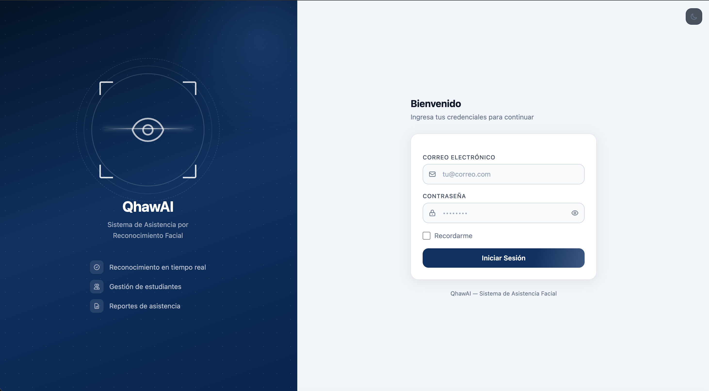
Login del sistema web — autenticación por rol
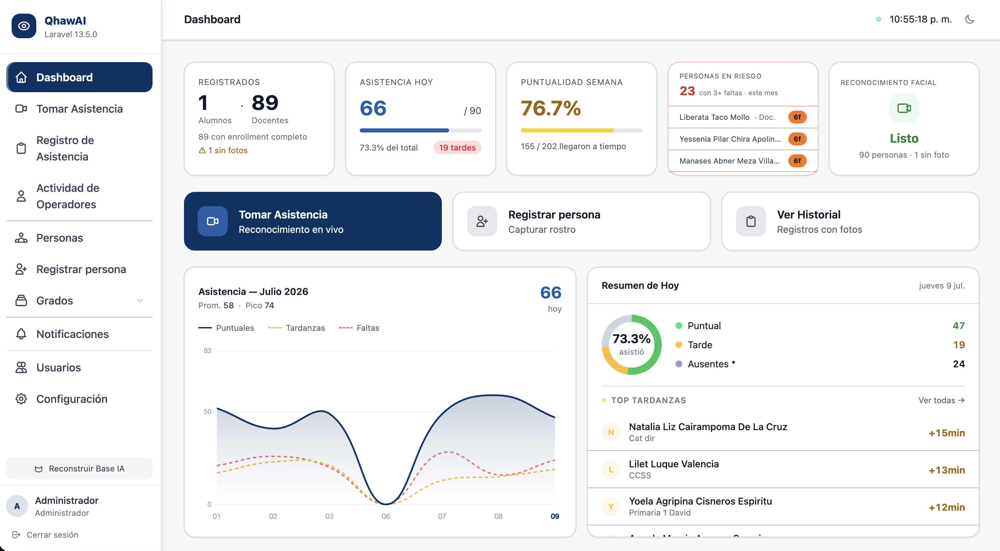
Dashboard — conteo de asistencias del día actual
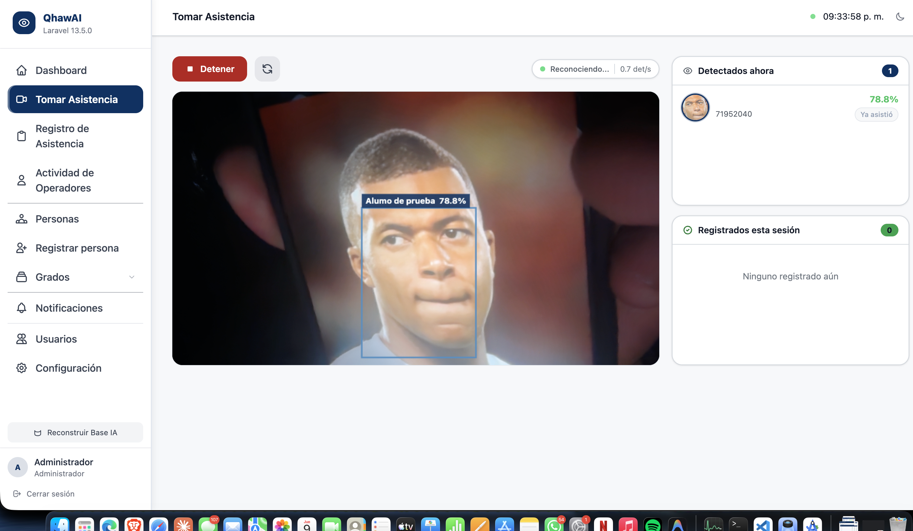
Tomar Asistencia — cámara activa con rectángulos de detección
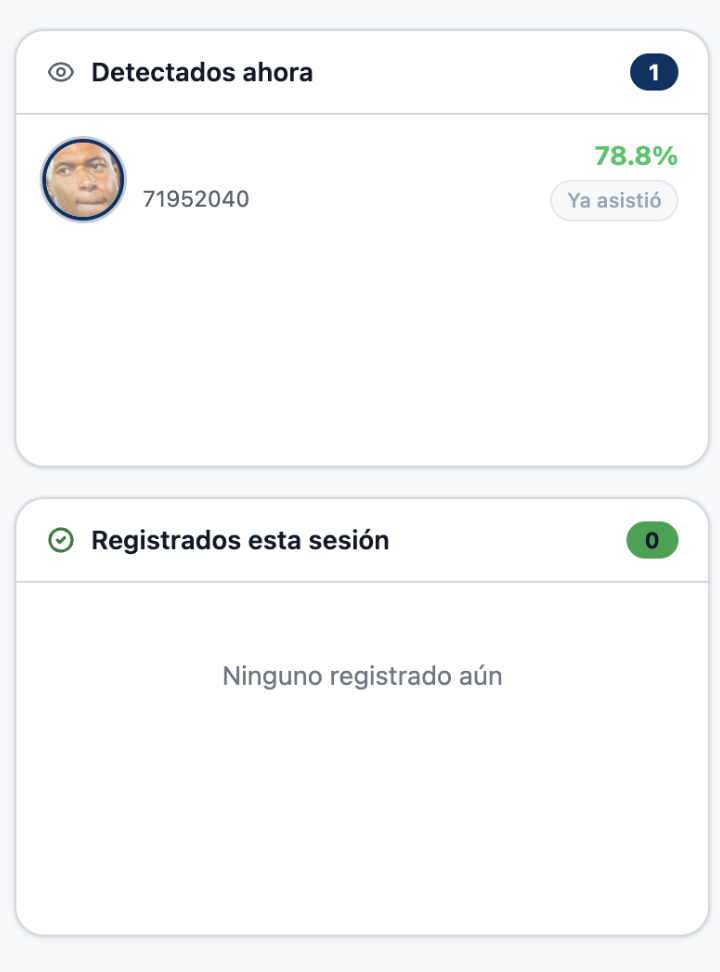
Panel lateral izquierdo — alumno detectado con foto y nombre
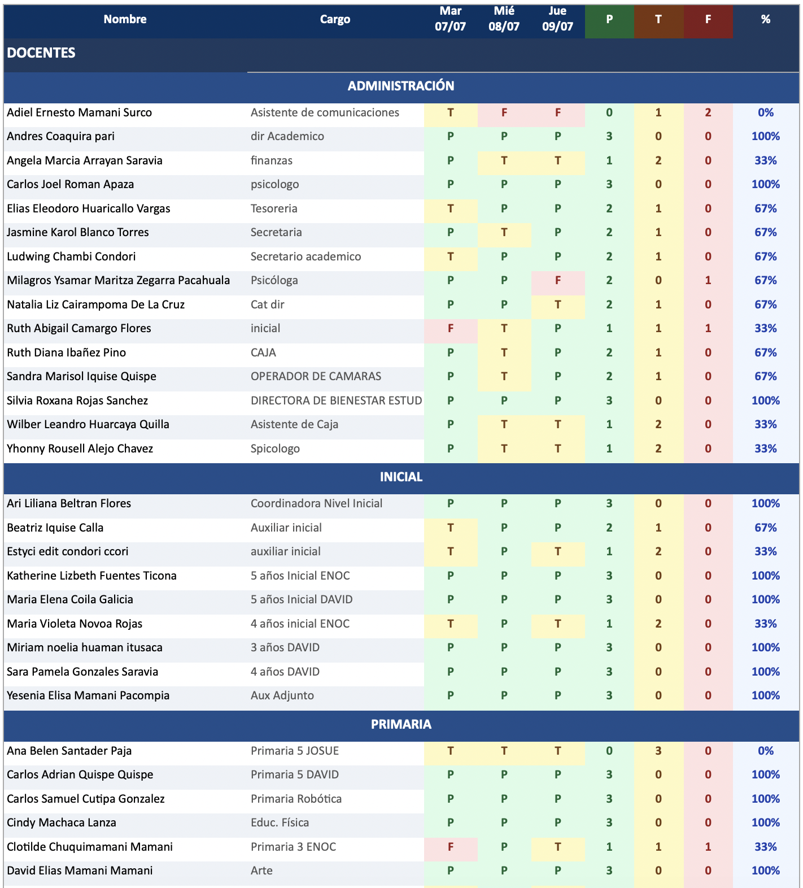
Archivo .xlsx abierto en Excel con datos reales de asistencia
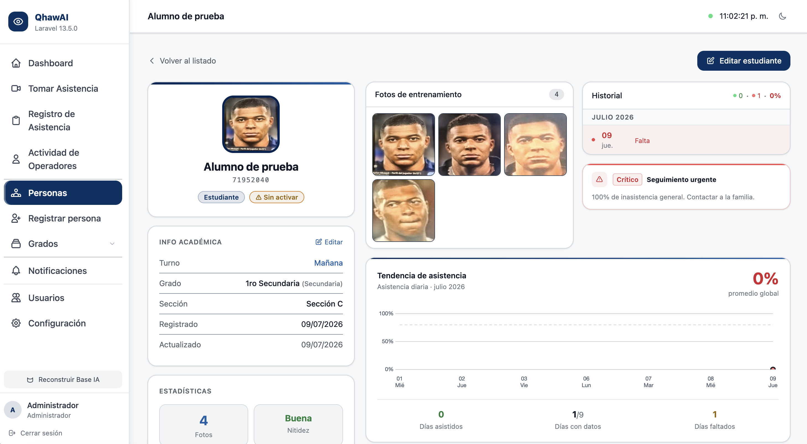
Perfil individual de estudiante con historial de asistencias
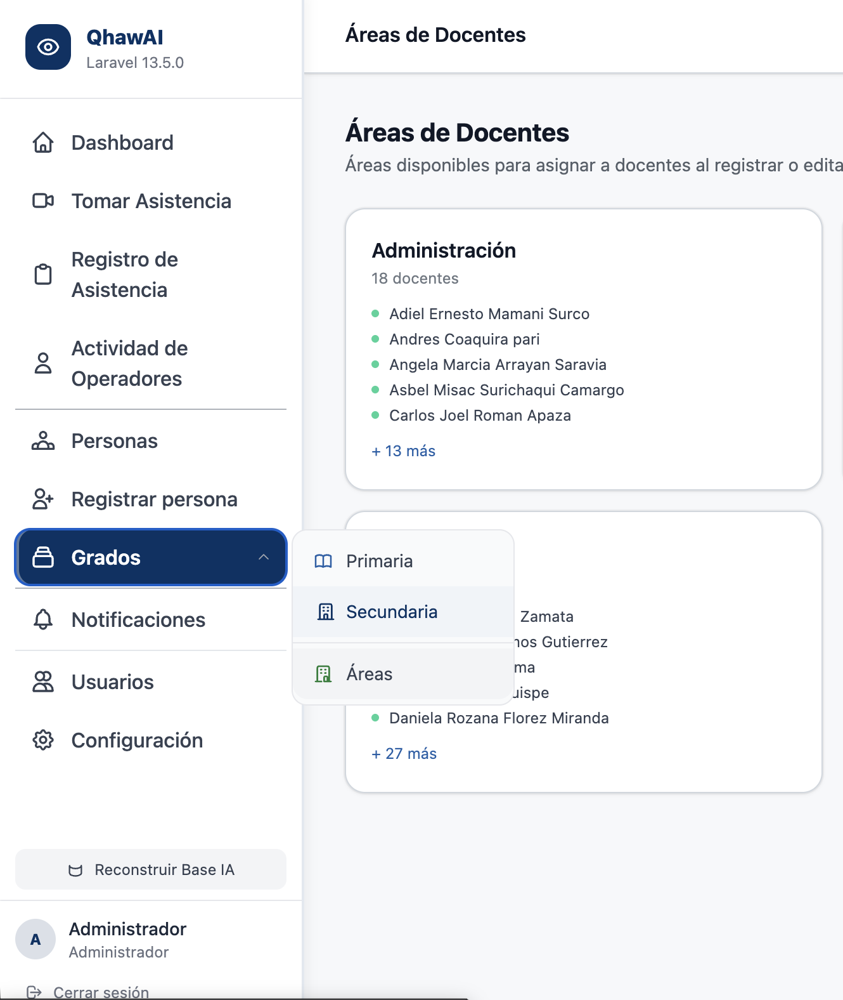
Administración de Grados y Secciones
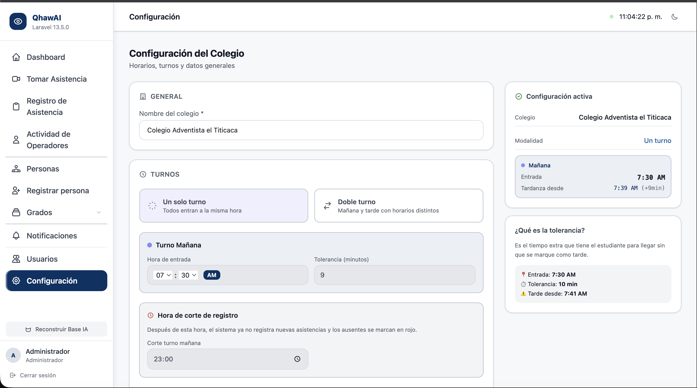
Configuración — horarios de turno mañana/tarde
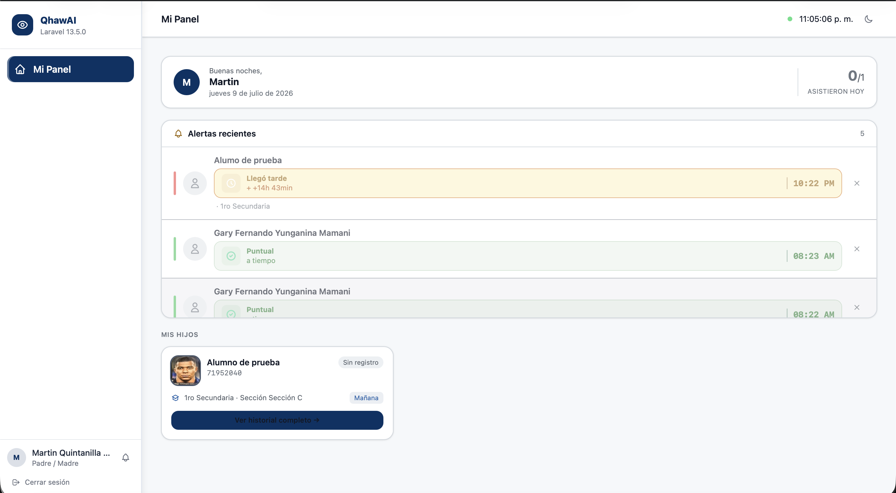
Panel /mi-panel — asistencias del hijo vinculado (rol padre)
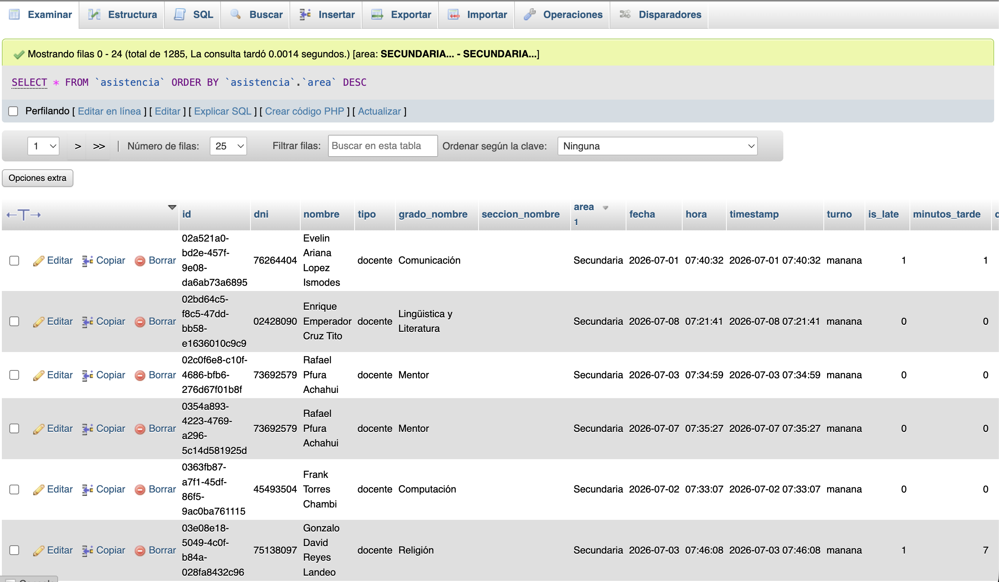
phpMyAdmin — tabla asistencia con registros reales
Aplicación Móvil Android
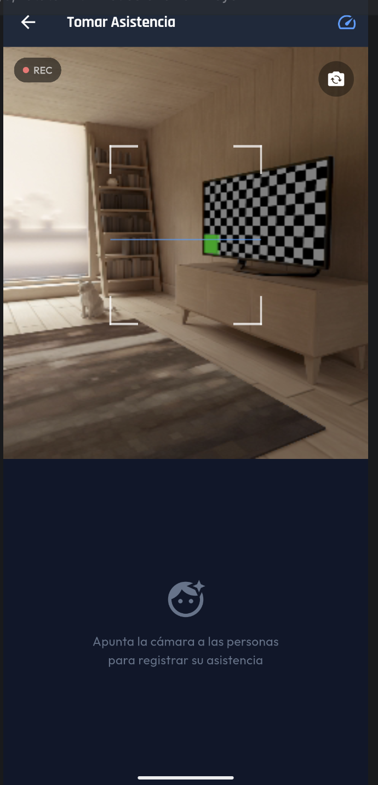
App Android — cámara activa

Celular del padre — notificación push visible
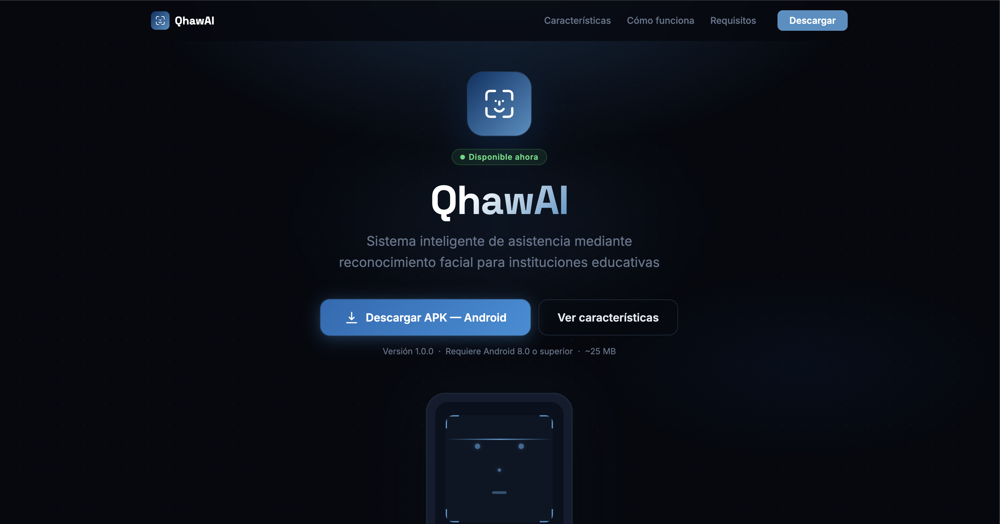
GitHub Pages — página de descarga del APK
Repositorios en GitHub
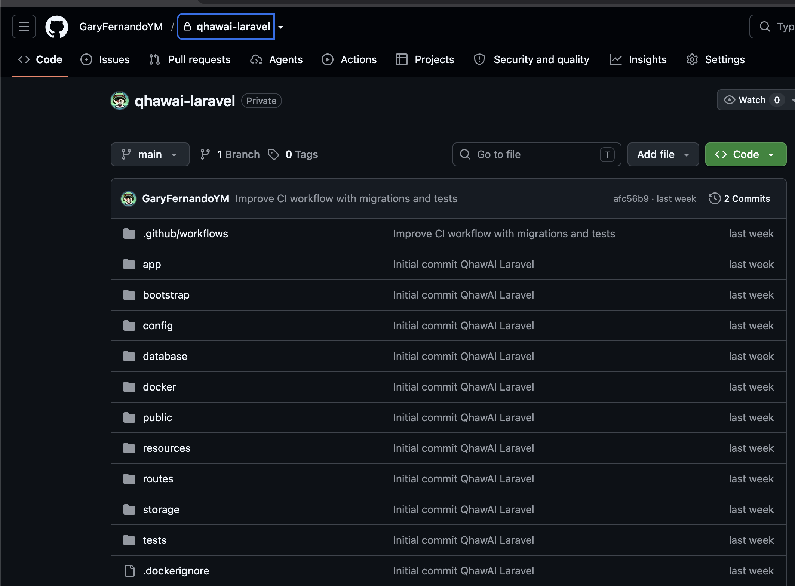
Repositorio Laravel en GitHub — estructura de carpetas
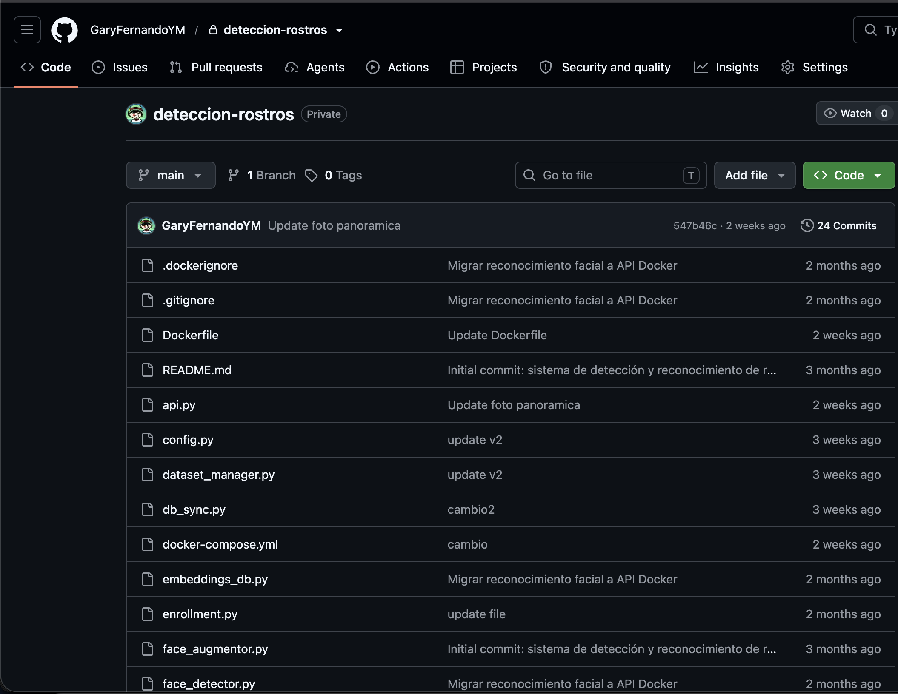
Repositorio Python en GitHub — estructura de carpetas
4. Instalación y Despliegue
Requisitos del servidor
🖥️ Servidor (Laravel + Python)
Linux (Ubuntu 20.04+) · PHP 8.3+ · MySQL 8.x · Composer 2.x
Python 3.11+ · pip · 4GB RAM mínimo (modelos IA ~2GB) · 20GB disco
Python 3.11+ · pip · 4GB RAM mínimo (modelos IA ~2GB) · 20GB disco
📱 Dispositivo Android
Android 8.0 (API 26) o superior · Cámara frontal o trasera
2GB RAM mínimo · Conexión a internet (para sync)
2GB RAM mínimo · Conexión a internet (para sync)
Backend Laravel
bash
# 1. Instalar dependencias composer install --no-dev --optimize-autoloader # 2. Configurar entorno cp .env.example .env # Editar .env: APP_URL, DB_*, FACIAL_API_URL, FACIAL_API_KEY, FIREBASE_CREDENTIALS # 3. Generar clave y migrar php artisan key:generate php artisan migrate # 4. Crear usuario administrador php artisan tinker >>> User::create(['name'=>'Admin','email'=>'admin@colegio.pe', 'password'=>bcrypt('contraseña'),'role'=>'admin','is_super_admin'=>true]); # 5. Optimizar para producción php artisan config:cache && php artisan route:cache && php artisan view:cache chmod -R 775 storage bootstrap/cache
API Python (Microservicio IA — Docker)
bash
# El microservicio IA corre en un contenedor Docker. # Nginx dentro del contenedor enruta al Uvicorn en el puerto interno 80. # Laravel consume el API en http://localhost:80 # Verificar contenedor activo docker ps # Ver logs del contenedor docker logs <nombre-contenedor> # Reiniciar contenedor (también se reinicia solo con restart: always) docker restart <nombre-contenedor>
App Android
Instalación directa: Visita garyfernandoym.github.io/QhawAI-Descarga/ desde el celular → toca "Descargar APK" → habilitar apps de fuentes desconocidas → instalar.
Evidencias de Despliegue
3.1 Estructura del Repositorio
Laravel (PHP)
app/
Http/Controllers/
AttendanceController.php
EnrollmentController.php
DashboardController.php
GradoController.php
ConfiguracionController.php
PersonaController.php
ParentController.php
Auth/LoginController.php
Admin/UsersController.php
Api/MobileDataController.php
Models/
Asistencia.php · Persona.php
User.php · Grado.php
Configuracion.php
Notifications/
AttendanceNotification.php
Services/
FacialApiService.php
FcmService.php
Python (FastAPI)
deteccionrostros/
api.py (FastAPI endpoints)
face_recognizer.py(ArcFace logic)
enrollment.py (pipeline)
dataset_manager.py(fotos y metadata)
student_repository.py (MySQL)
db_sync.py
logs/
attendance_images/{fecha}/
attendance_frames/{fecha}/
turno_config.json
dataset/{dni}/
faces/ (embeddings)
raw/ (originales)
Stack Tecnológico Completo
Backend / Web
Laravel 13.5 · PHP 8.3
MySQL 8.x · Eloquent ORM
Laravel Sanctum · Notifications
DomPDF · Maatwebsite/Excel
Guzzle HTTP
MySQL 8.x · Eloquent ORM
Laravel Sanctum · Notifications
DomPDF · Maatwebsite/Excel
Guzzle HTTP
Microservicio IA
Docker · Nginx · Uvicorn
Python 3.11 · FastAPI 0.110+
InsightFace buffalo_l (ArcFace embeddings 512-d)
YOLO-Face · OpenCV 4.x · NumPy · PyMySQL
Python 3.11 · FastAPI 0.110+
InsightFace buffalo_l (ArcFace embeddings 512-d)
YOLO-Face · OpenCV 4.x · NumPy · PyMySQL
Frontend / Apps
Blade Templates · Tailwind CSS
JavaScript ES2022 · Canvas API
MediaDevices API · Geolocation API
Android SDK (Kotlin/Java)
Firebase FCM · SQLite · CameraX
JavaScript ES2022 · Canvas API
MediaDevices API · Geolocation API
Android SDK (Kotlin/Java)
Firebase FCM · SQLite · CameraX